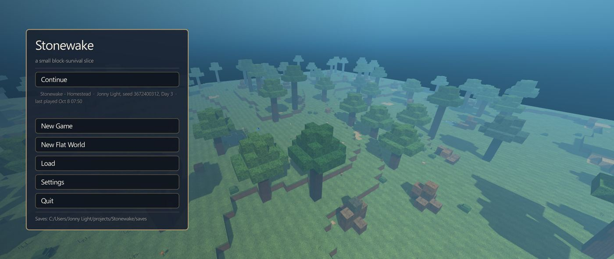
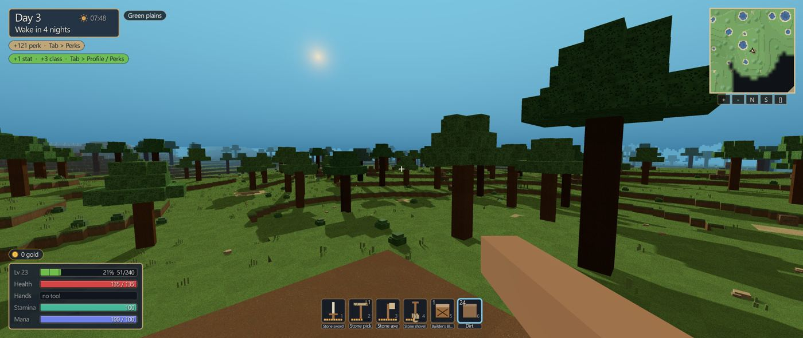
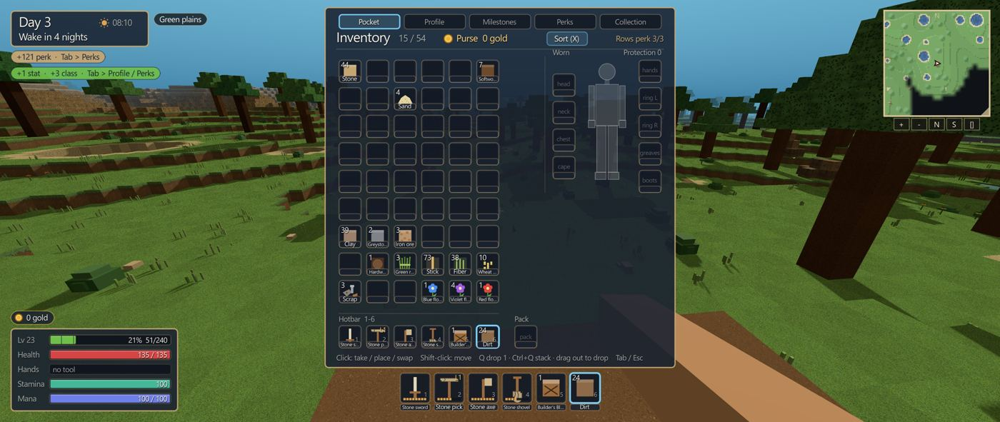

Snapshots
From a Day 3 plains world. A picture is not a play button.



In the current PC build
- Dig and place, with a yellow outline on what you are about to hit.
- A crafting bench, and tools that wear and can be repaired.
- An inventory, chests, a map, and a compass.
- Day and night, biomes, and water you can swim.
- Creatures in the world. Saves stay.
Not in yet
The water finish, villages, and the world editor are notes. This page does not claim them.